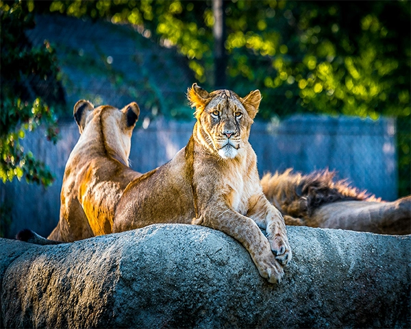
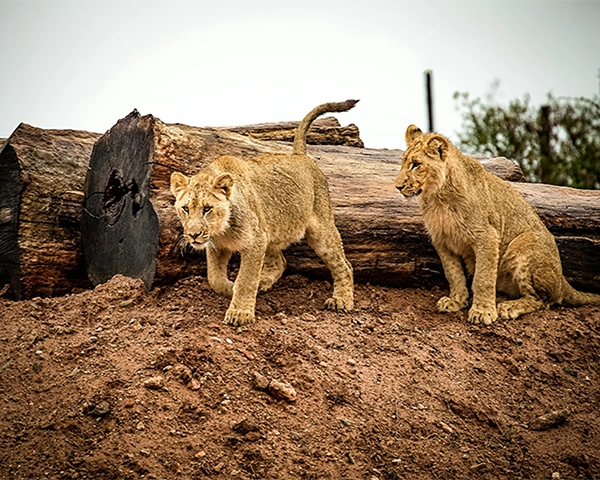

The name "lion" has its origin in different languages, for example the Latin word leo and
the ancient Greek word leon.
Linneaus, a Swedish botanist, physician and zoologist known mostly as the father of modern taxonomy,
once referred to the lion as a part of the species Felis leo in his work, Systema
Naturae during the 18th century.
The lion is nowadays part of the Panthera species, called Panthera leo, along with four
other big cats: the tiger (Panthera tigris), the jaguar (Panthera ocra) and the
leopard (Panthera pardus).
The name Panthera leo is believed to derive from Greek pan-(all) and ther (beast) but this
isn't necessarily true. It also shows a striking resemblance to the Sanskrit word
pundarikam (tiger) which in turn may originate from pandarah which means
"whitish-yellow".
Eating Behavior

A lionness (forefront) and two additional lions in the background. (Captivity)
One lion can consume up to 88 pounds in one meal. Each adult lion requires 11 pounds of meat per
day. Unlike many other Felids, they are able to capture larger prey, because they hunt in groups.
Even with that advantage, the lion's hunt success is still only successful in one out of every five
attempts, so they scavenge as much as they can. What they eat includes: warthogs, antelope, buffalo,
zebras, gazelles and even small elephants and rhinos.
In one year, one lion consumes the equivalent of 30 medium sized prey animals or 10-20 large prey
animals.
Mating Patterns

Lion cubs starting their day.
The lioness reaches sexual maturity at the age of four years and the male at five years.
Lions are induced ovulators, which means that they can make themselves ovulate at any time. It's the
male lions that start the female ovulation by mating with her several times. The female is also
polyestrous, which means that she will come in heat several times a year. The female lion estrus
period lasts for four days during which time the male and female mate approximately 2.2 times per
awaken hour—that is, 20 to 40 times per day. At this time, they are very likely to even give up
eating. Despite this, the mating success of the lions is very low. This frequency makes it
impossible for the males to know which cubs are theirs and thereby reduces the competition among the
males and increases pride stability. It's estimated that only one in every five estrus results in a
litter. The female has about one litter every other year. The survival rate for the cubs is quite
low. It is estimated that the lions copulate 3000 times for every cub that makes it through the
first year.
As mentioned before, the cubs are killed when a new group of males take over a pride. Since the
males only have about two or three years in a pride before younger males take over, their goal is to
reproduce before then. They can't afford to wait until the lionesses are done bringing the old cubs
up. After losing the cubs, the lioness will become estrous again after two to three weeks. Although
it happens that the females vigorously defend their young and are killed too.